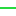

<!doctype html>
<html lang="en">
    <head>
        <meta charset="utf-8">
        <meta http-equiv="X-UA-Compatible" content="IE=edge">
        <meta name="viewport" content="initial-scale=1,user-scalable=no,maximum-scale=1,width=device-width">
        <meta name="mobile-web-app-capable" content="yes">
        <meta name="apple-mobile-web-app-capable" content="yes">
        <link rel="stylesheet" href="css/leaflet.css">
        <link rel="stylesheet" href="css/L.Control.Layers.Tree.css">
        <link rel="stylesheet" href="css/L.Control.Locate.min.css">
        <link rel="stylesheet" href="css/qgis2web.css">
        <link rel="stylesheet" href="css/fontawesome-all.min.css">
        <link rel="stylesheet" href="css/leaflet.photon.css">
        <style>
        html, body, #map {
            width: 100%;
            height: 100%;
            padding: 0;
            margin: 0;
        }
        </style>
        <title>Level of Traffic Stress Map (LTS) City of Guelph </title>
    </head>
    <body>
        <div id="map">
        </div>
        <script src="js/qgis2web_expressions.js"></script>
        <script src="js/leaflet.js"></script>
        <script src="js/L.Control.Layers.Tree.min.js"></script>
        <script src="js/L.Control.Locate.min.js"></script>
        <script src="js/leaflet.rotatedMarker.js"></script>
        <script src="js/leaflet.pattern.js"></script>
        <script src="js/leaflet-hash.js"></script>
        <script src="js/Autolinker.min.js"></script>
        <script src="js/rbush.min.js"></script>
        <script src="js/labelgun.min.js"></script>
        <script src="js/labels.js"></script>
        <script src="js/leaflet.photon.js"></script>
        <script src="data/Wards_1.js"></script>
        <script src="data/CyclingLevelofTrafficStress_2.js"></script>
        <script src="data/CityBoundary_3.js"></script>
        <script>
        var map = L.map('map', {
            zoomControl:false, maxZoom:28, minZoom:1
        })
        var hash = new L.Hash(map);
        map.attributionControl.setPrefix('<a href="https://github.com/qgis2web/qgis2web" target="_blank">qgis2web</a> &middot; <a href="https://leafletjs.com" title="A JS library for interactive maps">Leaflet</a> &middot; <a href="https://qgis.org">QGIS</a>');
        var autolinker = new Autolinker({truncate: {length: 30, location: 'smart'}});
        // remove popup's row if "visible-with-data"
        function removeEmptyRowsFromPopupContent(content, feature) {
         var tempDiv = document.createElement('div');
         tempDiv.innerHTML = content;
         var rows = tempDiv.querySelectorAll('tr');
         for (var i = 0; i < rows.length; i++) {
             var td = rows[i].querySelector('td.visible-with-data');
             var key = td ? td.id : '';
             if (td && td.classList.contains('visible-with-data') && feature.properties[key] == null) {
                 rows[i].parentNode.removeChild(rows[i]);
             }
         }
         return tempDiv.innerHTML;
        }
        // modify popup if contains media
        function addClassToPopupIfMedia(content, popup) {
            var tempDiv = document.createElement('div');
            tempDiv.innerHTML = content;
            var imgTd = tempDiv.querySelector('td img');
            if (imgTd) {
                var src = imgTd.getAttribute('src');
                if (/\.(jpg|jpeg|png|gif|bmp|webp|avif)$/i.test(src)) {
                    popup._contentNode.classList.add('media');
                    var img = popup._contentNode.querySelector('td img');
                    if (img) {
                        // If already loaded (cache), update immediately
                        if (img.complete && img.naturalHeight > 0) {
                            popup.update();
                        } else {
                            img.addEventListener('load', function() {
                                popup.update();
                            });
                            img.addEventListener('error', function() {
                                popup.update();
                            });
                        }
                    }
                } else if (/\.(mp3|wav|ogg|aac)$/i.test(src)) {
                    var audio = document.createElement('audio');
                    audio.controls = true;
                    audio.src = src;
                    imgTd.parentNode.replaceChild(audio, imgTd);
                    popup._contentNode.classList.add('media');
                    setTimeout(function() {
                        popup.setContent(tempDiv.innerHTML);
                        popup.update();
                    }, 10);
                } else if (/\.(mp4|webm|ogg|mov)$/i.test(src)) {
                    var video = document.createElement('video');
                    video.controls = true;
                    video.src = src;
                    video.style.width = "400px";
                    video.style.height = "300px";
                    video.style.maxHeight = "60vh";
                    video.style.maxWidth = "60vw";
                    imgTd.parentNode.replaceChild(video, imgTd);
                    popup._contentNode.classList.add('media');
                    // Aggiorna il popup quando il video carica i metadati
                    video.addEventListener('loadedmetadata', function() {
                        popup.update();
                    });
                    setTimeout(function() {
                        popup.setContent(tempDiv.innerHTML);
                        popup.update();
                    }, 10);
                } else {
                    popup._contentNode.classList.remove('media');
                }
            } else {
                popup._contentNode.classList.remove('media');
            }
        }
        var title = new L.Control({'position':'topleft'});
        title.onAdd = function (map) {
            this._div = L.DomUtil.create('div', 'info');
            this.update();
            return this._div;
        };
        title.update = function () {
            this._div.innerHTML = '<h2>Level of Traffic Stress Map (LTS) City of Guelph </h2>';
        };
        title.addTo(map);
        var abstract = new L.Control({'position':'bottomleft'});
        abstract.onAdd = function (map) {
            this._div = L.DomUtil.create('div',
            'leaflet-control abstract');
            this._div.id = 'abstract'
                this._div.setAttribute("onmouseenter", "abstract.show()");
                this._div.setAttribute("onmouseleave", "abstract.hide()");
                this.hide();
                return this._div;
            };
            abstract.hide = function () {
                this._div.classList.remove("abstractUncollapsed");
                this._div.classList.add("abstract");
                this._div.innerHTML = 'i'
            }
            abstract.show = function () {
                this._div.classList.remove("abstract");
                this._div.classList.add("abstractUncollapsed");
                this._div.innerHTML = 'This Level of Traffic Stress (LTS) map evaluates the comfort, perceived safety, and connectivity of Guelph\'s cycling and road network. Based on the Mineta Transportation Institute’s LTS framework (Mekuria et al., 2012), we classified Guelph\'s network into four stress scores ranging from LTS 1 (low-stress facilities suitable for all ages and abilities) to LTS 4 (high-stress arterials tolerated only by highly confident riders). <br /><br />We used data from OpenStreetMap to evaluate the LTS across the city based on separation (off-street multi-use paths vs. on-street bike lanes vs. mixed traffic), posted speed limits, the number of travel lanes, and, when information is available, lane width and bike lane width. LTS is based the "Weakest Link" logic meaning that if any single parameter on a roadway segment or crossing exceeds the threshold for LTS category, the overall rating for that link increases to a higher stress level. <a href="https://peterfurth.sites.northeastern.edu/level-of-traffic-stress/" target="_blank">Read more about LTS criteria here</a><br /><br />LTS helps identify which routes are comfortable and acessible moving beyond standard maps that simply show where bike lanes exist. For example, quiet residential street will get a Stress Score of 1, while the seperated bike lane along Woodlawn has a Stress Score of 3 due to wide roads, high speeds, and right-hook hazards. By looking at speed and road design alongside separation, this map paints a much better picture of what it is actually like to cycle along these segments.<br />Last Updated: July 2026';
        };
        abstract.addTo(map);
        var zoomControl = L.control.zoom({
            position: 'topleft'
        }).addTo(map);
        L.control.locate({locateOptions: {maxZoom: 19}}).addTo(map);
        var bounds_group = new L.featureGroup([]);
        function setBounds() {
            if (bounds_group.getLayers().length) {
                map.fitBounds(bounds_group.getBounds());
            }
            map.setMaxBounds(map.getBounds());
            map.setMinZoom(map.getZoom());
        }
        map.createPane('pane_OSMStandard_0');
        map.getPane('pane_OSMStandard_0').style.zIndex = 400;
        var layer_OSMStandard_0 = L.tileLayer('https://tile.openstreetmap.org/{z}/{x}/{y}.png', {
            pane: 'pane_OSMStandard_0',
            opacity: 1.0,
            attribution: '<a href="https://www.openstreetmap.org/copyright">© OpenStreetMap contributors, CC-BY-SA</a>',
            minZoom: 1,
            maxZoom: 28,
            minNativeZoom: 0,
            maxNativeZoom: 19
        });
        layer_OSMStandard_0;
        map.addLayer(layer_OSMStandard_0);
        function pop_Wards_1(feature, layer) {
            var popupContent = '<table>\
                    <tr>\
                        <td colspan="2">' + (feature.properties['WARD'] !== null ? autolinker.link(String(feature.properties['WARD']).replace(/'/g, '\'').toLocaleString()) : '') + '</td>\
                    </tr>\
                </table>';
            var content = removeEmptyRowsFromPopupContent(popupContent, feature);
			layer.on('popupopen', function(e) {
				addClassToPopupIfMedia(content, e.popup);
			});
			layer.bindPopup(content, { maxHeight: 400 });
        }

        function style_Wards_1_0(feature) {
            switch(String(feature.properties['WARD'])) {
                case '1':
                    return {
                pane: 'pane_Wards_1',
                opacity: 1,
                color: 'rgba(35,35,35,1.0)',
                dashArray: '',
                lineCap: 'butt',
                lineJoin: 'miter',
                weight: 1.0, 
                fill: true,
                fillOpacity: 0.55,
                fillColor: 'rgba(182,234,252,1.0)',
                interactive: false,
            }
                    break;
                case '2':
                    return {
                pane: 'pane_Wards_1',
                opacity: 1,
                color: 'rgba(35,35,35,1.0)',
                dashArray: '',
                lineCap: 'butt',
                lineJoin: 'miter',
                weight: 1.0, 
                fill: true,
                fillOpacity: 0.55,
                fillColor: 'rgba(180,252,179,1.0)',
                interactive: false,
            }
                    break;
                case '3':
                    return {
                pane: 'pane_Wards_1',
                opacity: 1,
                color: 'rgba(35,35,35,1.0)',
                dashArray: '',
                lineCap: 'butt',
                lineJoin: 'miter',
                weight: 1.0, 
                fill: true,
                fillOpacity: 0.55,
                fillColor: 'rgba(182,179,252,1.0)',
                interactive: false,
            }
                    break;
                case '4':
                    return {
                pane: 'pane_Wards_1',
                opacity: 1,
                color: 'rgba(35,35,35,1.0)',
                dashArray: '',
                lineCap: 'butt',
                lineJoin: 'miter',
                weight: 1.0, 
                fill: true,
                fillOpacity: 0.55,
                fillColor: 'rgba(252,239,202,1.0)',
                interactive: false,
            }
                    break;
                case '5':
                    return {
                pane: 'pane_Wards_1',
                opacity: 1,
                color: 'rgba(35,35,35,1.0)',
                dashArray: '',
                lineCap: 'butt',
                lineJoin: 'miter',
                weight: 1.0, 
                fill: true,
                fillOpacity: 0.55,
                fillColor: 'rgba(212,213,252,1.0)',
                interactive: false,
            }
                    break;
                case '6':
                    return {
                pane: 'pane_Wards_1',
                opacity: 1,
                color: 'rgba(35,35,35,1.0)',
                dashArray: '',
                lineCap: 'butt',
                lineJoin: 'miter',
                weight: 1.0, 
                fill: true,
                fillOpacity: 0.55,
                fillColor: 'rgba(252,182,210,1.0)',
                interactive: false,
            }
                    break;
            }
        }
        map.createPane('pane_Wards_1');
        map.getPane('pane_Wards_1').style.zIndex = 401;
        map.getPane('pane_Wards_1').style['mix-blend-mode'] = 'normal';
        var layer_Wards_1 = new L.geoJson(json_Wards_1, {
            attribution: '',
            interactive: false,
            dataVar: 'json_Wards_1',
            layerName: 'layer_Wards_1',
            pane: 'pane_Wards_1',
            onEachFeature: pop_Wards_1,
            style: style_Wards_1_0,
        });
        bounds_group.addLayer(layer_Wards_1);
        map.addLayer(layer_Wards_1);
        function pop_CyclingLevelofTrafficStress_2(feature, layer) {
            var popupContent = '<table>\
                    <tr>\
                        <th scope="row">name</th>\
                        <td class="visible-with-data" id="name">' + (feature.properties['name'] !== null ? autolinker.link(String(feature.properties['name']).replace(/'/g, '\'').toLocaleString()) : '') + '</td>\
                    </tr>\
                    <tr>\
                        <th scope="row">maxspeed</th>\
                        <td class="visible-with-data" id="maxspeed">' + (feature.properties['maxspeed'] !== null ? autolinker.link(String(feature.properties['maxspeed']).replace(/'/g, '\'').toLocaleString()) : '') + '</td>\
                    </tr>\
                    <tr>\
                        <th scope="row">lit</th>\
                        <td class="visible-with-data" id="lit">' + (feature.properties['lit'] !== null ? autolinker.link(String(feature.properties['lit']).replace(/'/g, '\'').toLocaleString()) : '') + '</td>\
                    </tr>\
                    <tr>\
                        <th scope="row">lanes</th>\
                        <td class="visible-with-data" id="lanes">' + (feature.properties['lanes'] !== null ? autolinker.link(String(feature.properties['lanes']).replace(/'/g, '\'').toLocaleString()) : '') + '</td>\
                    </tr>\
                    <tr>\
                        <th scope="row">highway</th>\
                        <td class="visible-with-data" id="highway">' + (feature.properties['highway'] !== null ? autolinker.link(String(feature.properties['highway']).replace(/'/g, '\'').toLocaleString()) : '') + '</td>\
                    </tr>\
                    <tr>\
                        <th scope="row">foot</th>\
                        <td class="visible-with-data" id="foot">' + (feature.properties['foot'] !== null ? autolinker.link(String(feature.properties['foot']).replace(/'/g, '\'').toLocaleString()) : '') + '</td>\
                    </tr>\
                    <tr>\
                        <th scope="row">bicycle</th>\
                        <td class="visible-with-data" id="bicycle">' + (feature.properties['bicycle'] !== null ? autolinker.link(String(feature.properties['bicycle']).replace(/'/g, '\'').toLocaleString()) : '') + '</td>\
                    </tr>\
                    <tr>\
                        <td colspan="2">' + (feature.properties['alt_name'] !== null ? autolinker.link(String(feature.properties['alt_name']).replace(/'/g, '\'').toLocaleString()) : '') + '</td>\
                    </tr>\
                    <tr>\
                        <th scope="row">Bike Stress Score</th>\
                        <td class="visible-with-data" id="StressScore">' + (feature.properties['StressScore'] !== null ? autolinker.link(String(feature.properties['StressScore']).replace(/'/g, '\'').toLocaleString()) : '') + '</td>\
                    </tr>\
                </table>';
            var content = removeEmptyRowsFromPopupContent(popupContent, feature);
			layer.on('popupopen', function(e) {
				addClassToPopupIfMedia(content, e.popup);
			});
			layer.bindPopup(content, { maxHeight: 400 });
        }

        function style_CyclingLevelofTrafficStress_2_0(feature) {
            switch(String(feature.properties['StressScore'])) {
                case '1':
                    return {
                pane: 'pane_CyclingLevelofTrafficStress_2',
                opacity: 1,
                color: 'rgba(5,214,35,1.0)',
                dashArray: '',
                lineCap: 'round',
                lineJoin: 'round',
                weight: 2.0,
                fillOpacity: 0,
                interactive: true,
            }
                    break;
                case '2':
                    return {
                pane: 'pane_CyclingLevelofTrafficStress_2',
                opacity: 1,
                color: 'rgba(255,234,6,1.0)',
                dashArray: '',
                lineCap: 'round',
                lineJoin: 'round',
                weight: 2.0,
                fillOpacity: 0,
                interactive: true,
            }
                    break;
                case '3':
                    return {
                pane: 'pane_CyclingLevelofTrafficStress_2',
                opacity: 1,
                color: 'rgba(255,133,5,1.0)',
                dashArray: '',
                lineCap: 'round',
                lineJoin: 'round',
                weight: 2.0,
                fillOpacity: 0,
                interactive: true,
            }
                    break;
                case '4':
                    return {
                pane: 'pane_CyclingLevelofTrafficStress_2',
                opacity: 1,
                color: 'rgba(235,0,0,1.0)',
                dashArray: '',
                lineCap: 'round',
                lineJoin: 'round',
                weight: 2.0,
                fillOpacity: 0,
                interactive: true,
            }
                    break;
            }
        }
        map.createPane('pane_CyclingLevelofTrafficStress_2');
        map.getPane('pane_CyclingLevelofTrafficStress_2').style.zIndex = 402;
        map.getPane('pane_CyclingLevelofTrafficStress_2').style['mix-blend-mode'] = 'normal';
        var layer_CyclingLevelofTrafficStress_2 = new L.geoJson(json_CyclingLevelofTrafficStress_2, {
            attribution: '',
            interactive: true,
            dataVar: 'json_CyclingLevelofTrafficStress_2',
            layerName: 'layer_CyclingLevelofTrafficStress_2',
            pane: 'pane_CyclingLevelofTrafficStress_2',
            onEachFeature: pop_CyclingLevelofTrafficStress_2,
            style: style_CyclingLevelofTrafficStress_2_0,
        });
        bounds_group.addLayer(layer_CyclingLevelofTrafficStress_2);
        map.addLayer(layer_CyclingLevelofTrafficStress_2);
        function pop_CityBoundary_3(feature, layer) {
        }

        function style_CityBoundary_3_0() {
            return {
                pane: 'pane_CityBoundary_3',
                opacity: 1,
                color: 'rgba(0,0,0,1.0)',
                dashArray: '',
                lineCap: 'round',
                lineJoin: 'round',
                weight: 4.0,
                fillOpacity: 0,
                interactive: false,
            }
        }
        map.createPane('pane_CityBoundary_3');
        map.getPane('pane_CityBoundary_3').style.zIndex = 403;
        map.getPane('pane_CityBoundary_3').style['mix-blend-mode'] = 'normal';
        var layer_CityBoundary_3 = new L.geoJson(json_CityBoundary_3, {
            attribution: '',
            interactive: false,
            dataVar: 'json_CityBoundary_3',
            layerName: 'layer_CityBoundary_3',
            pane: 'pane_CityBoundary_3',
            onEachFeature: pop_CityBoundary_3,
            style: style_CityBoundary_3_0,
        });
        bounds_group.addLayer(layer_CityBoundary_3);
        map.addLayer(layer_CityBoundary_3);
        const url = {"Nominatim OSM": "https://nominatim.openstreetmap.org/search?format=geojson&addressdetails=1&",
        "France BAN": "https://api-adresse.data.gouv.fr/search/?"}
        var photonControl = L.control.photon({
            url: url["Nominatim OSM"],
            feedbackLabel: '',
            position: 'topleft',
            includePosition: true,
            initial: true,
            // resultsHandler: myHandler,
        }).addTo(map);
        photonControl._container.childNodes[0].style.borderRadius="10px"
        // Create a variable to store the geoJSON data
        var x = null;
        // Create a variable to store the marker
        var marker = null;
        // Add an event listener to the Photon control to create a marker from the returned geoJSON data
        var z = null;
        photonControl.on('selected', function(e) {
            console.log(photonControl.search.resultsContainer);
            if (x != null) {
                map.removeLayer(obj3.marker);
                map.removeLayer(x);
            }
            obj2.gcd = e.choice;
            x = L.geoJSON(obj2.gcd).addTo(map);
            var label = typeof obj2.gcd.properties.label === 'undefined' ? obj2.gcd.properties.display_name : obj2.gcd.properties.label;
            obj3.marker = L.marker(x.getLayers()[0].getLatLng()).bindPopup(label).addTo(map);
            map.setView(x.getLayers()[0].getLatLng(), 17);
            z = typeof e.choice.properties.label === 'undefined'? e.choice.properties.display_name : e.choice.properties.label;
            console.log(e);
            e.target.input.value = z;
        });
        var search = document.getElementsByClassName("leaflet-photon leaflet-control")[0];
        search.classList.add("leaflet-control-search")
        search.style.display = "flex";
        search.style.backgroundColor="rgba(255,255,255,0.5)" 

        // Create the new button element
        var button = document.createElement("div");
        button.id = "gcd-button-control";
        button.className = "gcd-gl-btn fa fa-search search-button";

        // Insert the button at the beginning of the search control
        search.insertBefore(button, search.firstChild);
        last = search.lastChild;
        last.style.display = "none";
        button.addEventListener("click", function (e) {
            if (last.style.display === "none") {
                last.style.display = "block";
            } else {
                last.style.display = "none";
            }
        });
        var overlaysTree = [
            {label: ' City Boundary', layer: layer_CityBoundary_3},
            {label: 'Cycling Level of Traffic Stress<br /><table><tr><td style="text-align: center;"></td><td>1</td></tr><tr><td style="text-align: center;"></td><td>2</td></tr><tr><td style="text-align: center;"></td><td>3</td></tr><tr><td style="text-align: center;"></td><td>4</td></tr></table>', layer: layer_CyclingLevelofTrafficStress_2},
            {label: 'Wards<br /><table><tr><td style="text-align: center;"></td><td>1</td></tr><tr><td style="text-align: center;"></td><td>2</td></tr><tr><td style="text-align: center;"></td><td>3</td></tr><tr><td style="text-align: center;"></td><td>4</td></tr><tr><td style="text-align: center;"></td><td>5</td></tr><tr><td style="text-align: center;"></td><td>6</td></tr></table>', layer: layer_Wards_1},
            {label: "OSM Standard", layer: layer_OSMStandard_0, radioGroup: 'bm' },]
        var lay = L.control.layers.tree(null, overlaysTree,{
            //namedToggle: true,
            //selectorBack: false,
            //closedSymbol: '&#8862; &#x1f5c0;',
            //openedSymbol: '&#8863; &#x1f5c1;',
            //collapseAll: 'Collapse all',
            //expandAll: 'Expand all',
            collapsed: false, 
        });
        lay.addTo(map);
		document.addEventListener("DOMContentLoaded", function() {
            // set new Layers List height which considers toggle icon
            function newLayersListHeight() {
                var layerScrollbarElement = document.querySelector('.leaflet-control-layers-scrollbar');
                if (layerScrollbarElement) {
                    var layersListElement = document.querySelector('.leaflet-control-layers-list');
                    var originalHeight = layersListElement.style.height 
                        || window.getComputedStyle(layersListElement).height;
                    var newHeight = parseFloat(originalHeight) - 50;
                    layersListElement.style.height = newHeight + 'px';
                }
            }
            var isLayersListExpanded = true;
            var controlLayersElement = document.querySelector('.leaflet-control-layers');
            var toggleLayerControl = document.querySelector('.leaflet-control-layers-toggle');
            // toggle Collapsed/Expanded and apply new Layers List height
            toggleLayerControl.addEventListener('click', function() {
                if (isLayersListExpanded) {
                    controlLayersElement.classList.remove('leaflet-control-layers-expanded');
                } else {
                    controlLayersElement.classList.add('leaflet-control-layers-expanded');
                }
                isLayersListExpanded = !isLayersListExpanded;
                newLayersListHeight()
            });	
			// apply new Layers List height if toggle layerstree
			if (controlLayersElement) {
				controlLayersElement.addEventListener('click', function(event) {
					var toggleLayerHeaderPointer = event.target.closest('.leaflet-layerstree-header-pointer span');
					if (toggleLayerHeaderPointer) {
						newLayersListHeight();
					}
				});
			}
            // Collapsed/Expanded at Start to apply new height
            setTimeout(function() {
                toggleLayerControl.click();
            }, 10);
            setTimeout(function() {
                toggleLayerControl.click();
            }, 10);
            // Collapsed touch/small screen
            var isSmallScreen = window.innerWidth < 650;
            if (isSmallScreen) {
                setTimeout(function() {
                    controlLayersElement.classList.remove('leaflet-control-layers-expanded');
                    isLayersListExpanded = !isLayersListExpanded;
                }, 500);
            }  
        });       
        setBounds();
        </script>        
    </body>
</html>
